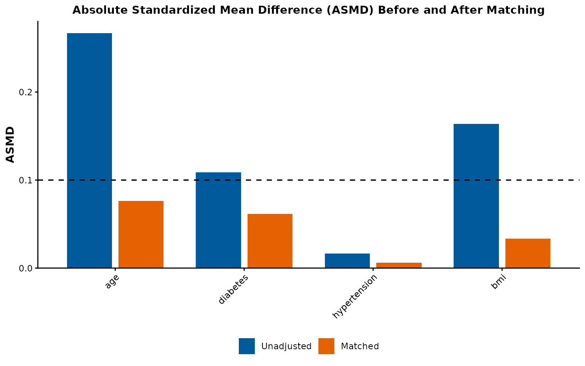
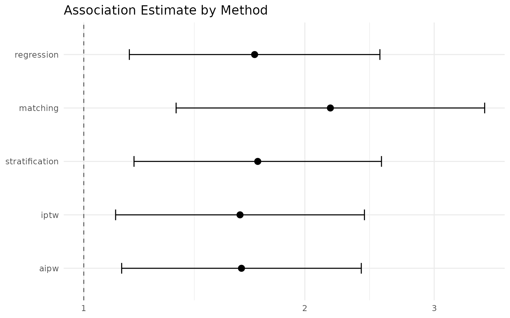

IndepAssoc: A Quick-Start Guide
indepassoc-quickstart.RmdIntroduction
IndepAssoc generalizes the propensity-score-based
analysis pipeline used in retrospective cohort studies to answer the
core scientific question:
Is a risk factor or exposure independently associated with an outcome, after adjusting for confounders?
Matching is used in the context of estimating the effect of a binary treatment or exposure on an outcome while controlling for measured pre-treatment variables. The goal of matching is to produce covariate balance, i.e., for the distributions of covariates in the two groups to be approximately equal, as they would be in a successful randomized experiment.
A matching analysis with IndepAssoc involves four
primary steps: 1) building a propensity score model, 2) matching
cohorts, 3) assessing covariate balance, and 4) estimating the treatment
effect using multiple regression approaches. Here we walk through these
steps using a simulated example dataset.
library(IndepAssoc)
data(example_cohort)
data <- example_cohort
head(data, 5)
#> exposure age diabetes hypertension bmi outcome_binary
#> 1 1 78.70958 1 0 39.62529 1
#> 2 0 59.35302 0 1 30.62061 1
#> 3 1 68.63128 1 0 32.85367 1
#> 4 1 71.32863 0 1 29.88487 0
#> 5 1 69.04268 0 0 23.02033 1
#> outcome_continuous
#> 1 95.60768
#> 2 80.28689
#> 3 80.69196
#> 4 79.63079
#> 5 80.06230The dataset contains a binary exposure indicator
(exposure), baseline covariates (age,
diabetes, hypertension, bmi), and
two outcomes (outcome_binary,
outcome_continuous).
Step 1: Build the Propensity Score Model
The first step is to estimate a propensity score for each unit — the predicted probability of receiving treatment given the covariates. This is done via logistic regression.
ps <- build_ps_model(
data = data,
exposure = "exposure",
covariates = c("age", "diabetes", "hypertension", "bmi")
)
summary(ps$model)$coefficients
#> Estimate Std. Error z value Pr(>|z|)
#> (Intercept) -2.28986906 0.86724090 -2.6404071 0.008280648
#> age 0.02961410 0.01020326 2.9024155 0.003702971
#> diabetes 0.61916877 0.22644801 2.7342645 0.006251979
#> hypertension 0.12384881 0.19382912 0.6389587 0.522849768
#> bmi 0.03060021 0.02014597 1.5189251 0.128781349The propensity scores are appended to the data as the
.ps column:
summary(ps$data$.ps)
#> Min. 1st Qu. Median Mean 3rd Qu. Max.
#> 0.3645 0.6084 0.6695 0.6660 0.7283 0.9063Step 2: Check Initial Imbalance
Before matching, we can examine the initial imbalance using
cobalt::bal.tab() via check_balance():
m0 <- match_cohort(ps, caliper = 0.2)
check_balance(m0, threshold = 0.10, plot = FALSE)
#> $pre
#> Balance Measures
#> Type Diff.Un Diff.Adj
#> distance Distance 0.4047 0.1565
#> age Contin. 0.2669 0.0762
#> diabetes Binary 0.1088 0.0617
#> hypertension Binary 0.0165 0.0062
#> bmi Contin. 0.1638 0.0334
#>
#> Sample sizes
#> Control Treated
#> All 167 333
#> Matched 162 162
#> Unmatched 5 171
#>
#> $post
#> Balance Measures
#> Type Diff.Adj
#> distance Distance 0.1565
#> age Contin. 0.0762
#> diabetes Binary 0.0617
#> hypertension Binary 0.0062
#> bmi Contin. 0.0334
#>
#> Sample sizes
#> Control Treated
#> All 167 333
#> Matched 162 162
#> Unmatched 5 171
#>
#> $threshold
#> [1] 0.1
#>
#> $all_balanced
#> [1] FALSE
#>
#> attr(,"class")
#> [1] "IndepBalance"Step 3: Match Cohorts
We perform 1:1 nearest-neighbor matching on the propensity score without replacement, with a caliper of 0.2 standard deviations of the logit(PS):
matched <- match_cohort(ps, caliper = 0.2)
cat("Unmatched:", nrow(data), "-> Matched:", nrow(matched$data), "observations\n")
#> Unmatched: 500 -> Matched: 324 observationsThe matched data includes a match_num (and
strata) column identifying each matched pair.
Step 4: Assess Covariate Balance
After matching, we assess whether the covariates are balanced between treatment groups:
balance <- check_balance(matched, threshold = 0.10)
cat("All balanced:", balance$all_balanced, "\n")
#> All balanced: FALSELove Plot
run_pipeline() returns the ASMD chart as part of its
result. The balance_plot element visualizes absolute
standardized mean differences (ASMD) for each covariate before and after
matching:
result <- run_pipeline(
data = data,
exposure = "exposure",
covariates = c("age", "diabetes", "hypertension", "bmi"),
outcome = "outcome_binary",
type = "binary",
methods = "regression"
)
result$balance_plot
Blue bars represent the unmatched cohort and orange bars represent the matched cohort. All covariates should fall below the dashed line (ASMD < 0.10) after matching.
Step 5: Descriptive Tables
Unmatched Data
For the unmatched data, we use chi-square tests (categorical) and Wilcoxon rank-sum tests (continuous):
table_unmatched(data, "exposure", c("age", "diabetes", "hypertension", "bmi"))| Characteristic |
0 N = 1671 |
1 N = 3331 |
p-value2 |
|---|---|---|---|
| age | 62.2 (56.4, 69.7) | 65.4 (59.5, 71.8) | 0.006 |
| diabetes | 36 (22%) | 108 (32%) | 0.015 |
| hypertension | 85 (51%) | 175 (53%) | 0.8 |
| bmi | 27.0 (24.1, 30.2) | 28.1 (25.0, 31.4) | 0.041 |
| 1 Median (Q1, Q3); n (%) | |||
| 2 Wilcoxon rank sum test; Pearson’s Chi-squared test | |||
Matched Data
For the matched data, we use paired tests — McNemar (categorical) and Wilcoxon signed-rank (continuous):
table_matched(matched, c("age", "diabetes", "hypertension", "bmi"))| Characteristic |
Table 1
|
Table 2
|
||||
|---|---|---|---|---|---|---|
|
0 N = 1621 |
1 N = 1621 |
p-value2 |
0 N = 1623 |
1 N = 1623 |
p-value4 | |
| diabetes | 35 (22%) | 45 (28%) | 0.066 | |||
| hypertension | 83 (51%) | 84 (52%) | >0.9 | |||
| age | 62.3 (56.7, 69.7) | 64.4 (57.7, 70.5) | 0.2 | |||
| bmi | 27.3 (24.1, 30.2) | 27.9 (23.9, 31.0) | 0.7 | |||
| 1 n (%) | ||||||
| 2 McNemar’s Chi-squared test with continuity correction | ||||||
| 3 Median (Q1, Q3) | ||||||
| 4 Wilcoxon signed rank test with continuity correction | ||||||
Step 6: Estimate the Treatment Effect
IndepAssoc fits three regression models matching common
reporting standards in the cardiac surgery literature (Benedetto et al.,
2018):
Binary Outcome
models_bin <- fit_all_models(
ps_model = ps,
matched_data = matched$data,
outcome = "outcome_binary",
type = "binary"
)
models_bin_display <- models_bin$summary_w
models_bin_display$p <- ifelse(models_bin_display$p < 0.001, "<0.001",
sprintf("%.3f", models_bin_display$p))
models_bin_display
#> label Model OR CI_95 p
#> 1 outcome_binary Fully adjusted logistic 1.71 1.15-2.53 0.008
#> 2 outcome_binary Conditional logit 2.17 1.34-3.51 0.002
#> 3 outcome_binary Mixed effect logistic 2.10 1.32-3.36 0.002The three models are:
- Fully adjusted logistic: GLM on the full unmatched data with all covariates
-
Conditional logit:
clogit()on matched data, stratified by pair -
Mixed effect logistic:
glmer()on matched data with random intercept for pair
Continuous Outcome
models_cont <- fit_all_models(
ps_model = ps,
matched_data = matched$data,
outcome = "outcome_continuous",
type = "continuous"
)
models_cont_display <- models_cont$summary_w
models_cont_display$p <- ifelse(models_cont_display$p < 0.001, "<0.001",
sprintf("%.3f", models_cont_display$p))
models_cont_display
#> label Model SC CI_95
#> 1 outcome_continuous Fully adjusted linear regression 0.0334 0.013-0.0538
#> 2 outcome_continuous Conditional linear regression 0.0466 0.0209-0.0724
#> 3 outcome_continuous Mixed effect linear regression 0.0466 0.0209-0.0724
#> SC_CI_95 p
#> 1 0.033(0.013-0.0538) 0.001
#> 2 0.047(0.0209-0.0724) <0.001
#> 3 0.047(0.0209-0.0724) <0.001Compare All Confounding-Adjustment Methods
Beyond the three regression models above, fit_outcome()
tests the exposure–outcome association under five confounding-adjustment
methods that share a common tidy result: regression
(full-sample adjusted GLM/LM), matching (propensity-score
matching with conditional-logit (binary) / within-pair (continuous)
estimation), stratification (Mantel–Haenszel quintiles for
binary, inverse-variance pooling for continuous), iptw
(stabilized inverse-probability weights with robust
sandwich (vcovHC) standard errors), and
aipw (Bang & Robins augmented estimator).
run_pipeline(..., methods = ...) runs them all and returns
a single comparison table; format_comparison() renders it
as a publication-ready table:
result <- run_pipeline(
data = data,
exposure = "exposure",
covariates = c("age", "diabetes", "hypertension", "bmi"),
outcome = "outcome_binary",
type = "binary",
methods = c("regression", "matching", "stratification", "iptw", "aipw")
)
format_comparison(result$comparison)
#> Method OR 95% CI p-value n
#> 1 Regression 1.71 1.15–2.53 0.008 500
#> 2 Matching 2.17 1.34–3.51 0.002 324
#> 3 Stratification 1.73 1.17–2.54 0.008 500
#> 4 IPTW 1.63 1.10–2.41 0.014 500
#> 5 AIPW 1.64 1.13–2.39 0.010 500All methods recover a positive association between treatment and the
binary outcome (estimate > 1 on the odds-ratio scale).
Agreement across the five methods — including the matched and weighted
estimators that do not rely on the outcome-regression functional form —
is a reassuring sign that the association is not an artifact of any
single adjustment strategy. Large discrepancies between, say, the
regression and matching estimates often indicate misspecification of the
outcome model or poor overlap, and warrant closer inspection of the
propensity-score distribution.
The comparison table can be visualized directly:
plot_comparison(result$comparison)
Choosing an adjustment method
The five methods answer the same question — is the exposure independently associated with the outcome after adjusting for the measured confounders? — but reach the answer by different routes, and the right choice depends on the data and the question:
- Regression models the outcome directly with all confounders included. Efficient and familiar, but the estimate depends on the outcome-model functional form, and it extrapolates where propensity scores have poor overlap.
- Matching discards poorly overlaid units, so inference stays close to the data; it answers the treatment-on-the-treated question and is the estimator used in the source cardiac-surgery papers. Cost: fewer units and no benefit from observations that do not overlap.
- Stratification groups patients into propensity-score strata (quintiles) and pools within-stratum contrasts. Simple and transparent, but residual confounding within strata is a real risk when the score’s discriminating power is high.
- IPTW reweights the sample to mimic a randomized comparison. It uses all units, but very small weights on poorly overlaid patients can inflate variance and invite model sensitivity.
- AIPW combines an outcome model with a treatment model so the estimate stays consistent if only one of the two is correctly specified. Doubly robust, and the natural choice when both models are plausible.
In practice: run all five through run_pipeline() and
read the comparison table. Agreement across methods that model the
outcome directly (regression, AIPW) and those that model treatment
assignment (matching, stratification, IPTW) is evidence the association
is not an artifact of any single adjustment strategy. Disagreement flags
misspecification or poor overlap, not a vote — inspect the
propensity-score distribution and the balance tables before trusting any
single estimate.
Step 7: Paired Statistical Tests
McNemar Test (Binary)
mcnemar_result <- mcnemar_test(matched$data, "outcome_binary", "exposure")
mcnemar_result$p.value <- sprintf("%.3f", mcnemar_result$p.value)
mcnemar_result$statistic <- round(mcnemar_result$statistic, 2)
mcnemar_result$p <- sprintf("%.3f", mcnemar_result$p)
mcnemar_result
#> label 0(n=162) 1(n=162) statistic p.value p
#> 1 outcome_binary 74(45.7%) 102(63%) 9.59 0.002 0.002Paired Wilcoxon Test (Continuous)
wilcox_result <- paired_wilcoxon_test(matched$data, "outcome_continuous", "exposure")
wilcox_result$p.value <- sprintf("%.3f", wilcox_result$p.value)
wilcox_result
#> label 0(n=162) 1(n=162) statistic p.value
#> 1 outcome_continuous 84.3(79.2-88.5) 86.1(81.1-90.6) 4734 0.002Full Pipeline
All steps above can be executed in a single call:
result <- run_pipeline(
data = data,
exposure = "exposure",
covariates = c("age", "diabetes", "hypertension", "bmi"),
outcome = "outcome_binary",
type = "binary"
)
summary(result)Exporting Results
export_results(result, output_dir = "output")This writes CSV files for the balance tables, regression summaries, and statistical tests.
Reporting Results
To report matching results in a manuscript, include:
- The matching specification (method, caliper, ratio)
- The distance measure (logistic regression PS)
- Covariate balance statistics (ASMD before and after matching, Love plot)
- Number of matched, unmatched, and discarded units
- The method of estimating the treatment effect and standard error
- All three regression model results (fully adjusted, conditional, mixed effect)
Example write-up
We used propensity score matching to estimate the association between treatment and outcome while adjusting for age, diabetes, hypertension, and BMI. A logistic regression model was used to estimate propensity scores, and 1:1 nearest-neighbor matching without replacement was performed with a caliper of 0.2 standard deviations of the logit propensity score. After matching, all standardized mean differences for covariates were below 0.10, indicating adequate balance (Figure 1). Three regression models were fitted to the matched cohort: (1) a fully adjusted logistic regression on the unmatched data, (2) a conditional logistic regression on the matched data stratified by pair, and (3) a mixed-effect logistic regression with a random intercept for matched pair. All three models showed a statistically significant association between treatment and outcome (Table 1).
References
Benedetto, U., Head, S.J., Angelini, G.D. and Blackstone, E.H. (2018). Statistical primer: propensity score matching and its alternatives. European Journal of Cardio-Thoracic Surgery, 53(6), pp.1112-1117.
Ho, D.E., Imai, K., King, G. and Stuart, E.A. (2007). Matching as Nonparametric Preprocessing for Reducing Model Dependence in Parametric Causal Inference. Political Analysis, 15(3), pp.199-236.
Rosenbaum, P.R. and Rubin, D.B. (1983). The Central Role of the Propensity Score in Observational Studies for Causal Effects. Biometrika, 70(1), pp.41-55.
Stuart, E.A. (2010). Matching Methods for Causal Inference: A Review and a Look Forward. Statistical Science, 25(1), pp.1-21.